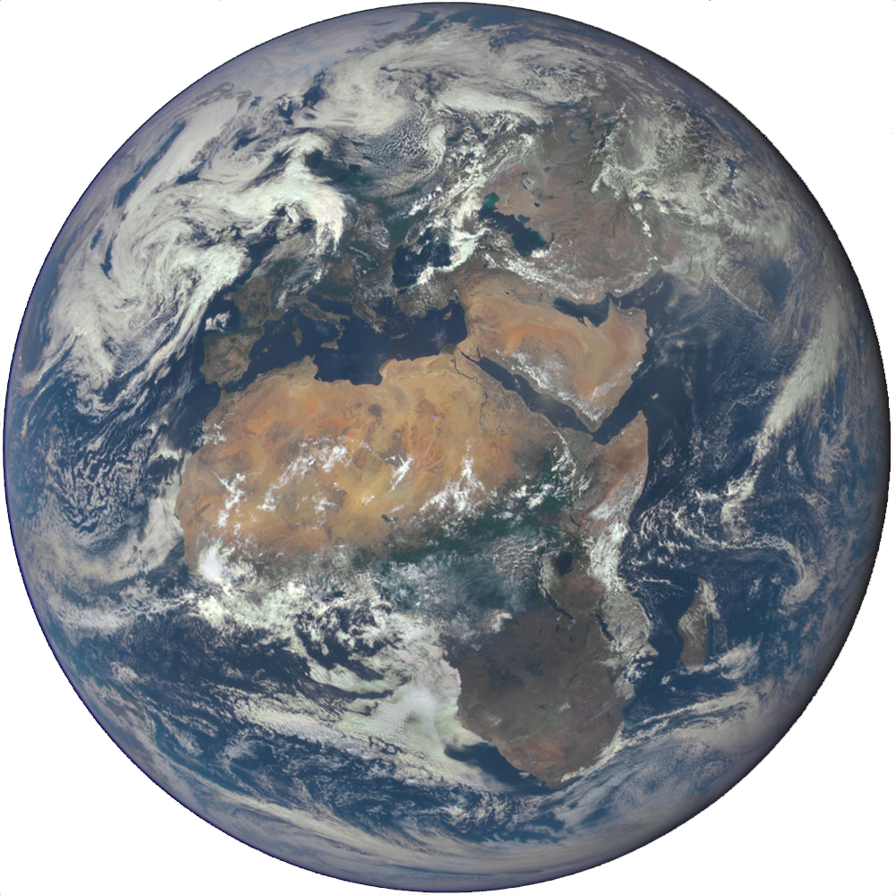
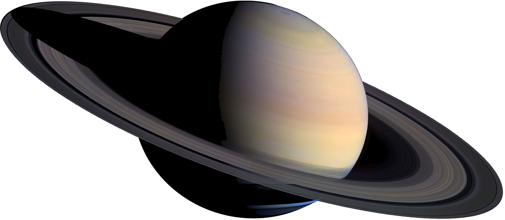
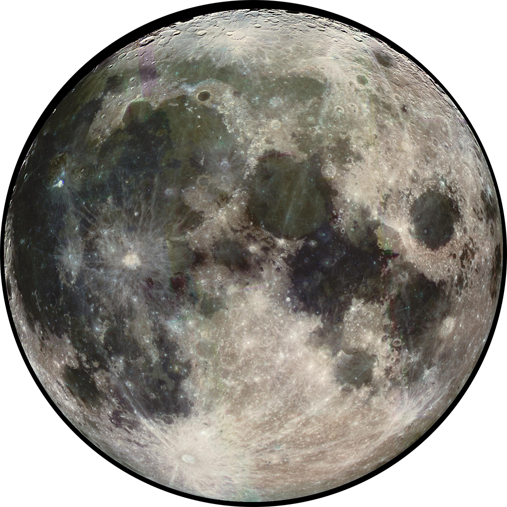
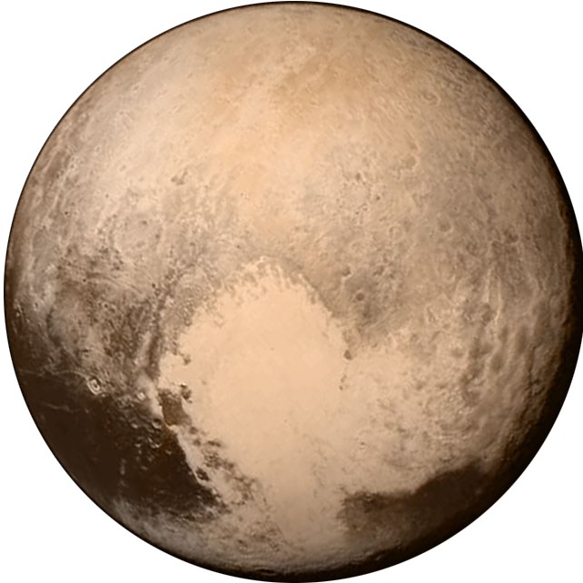
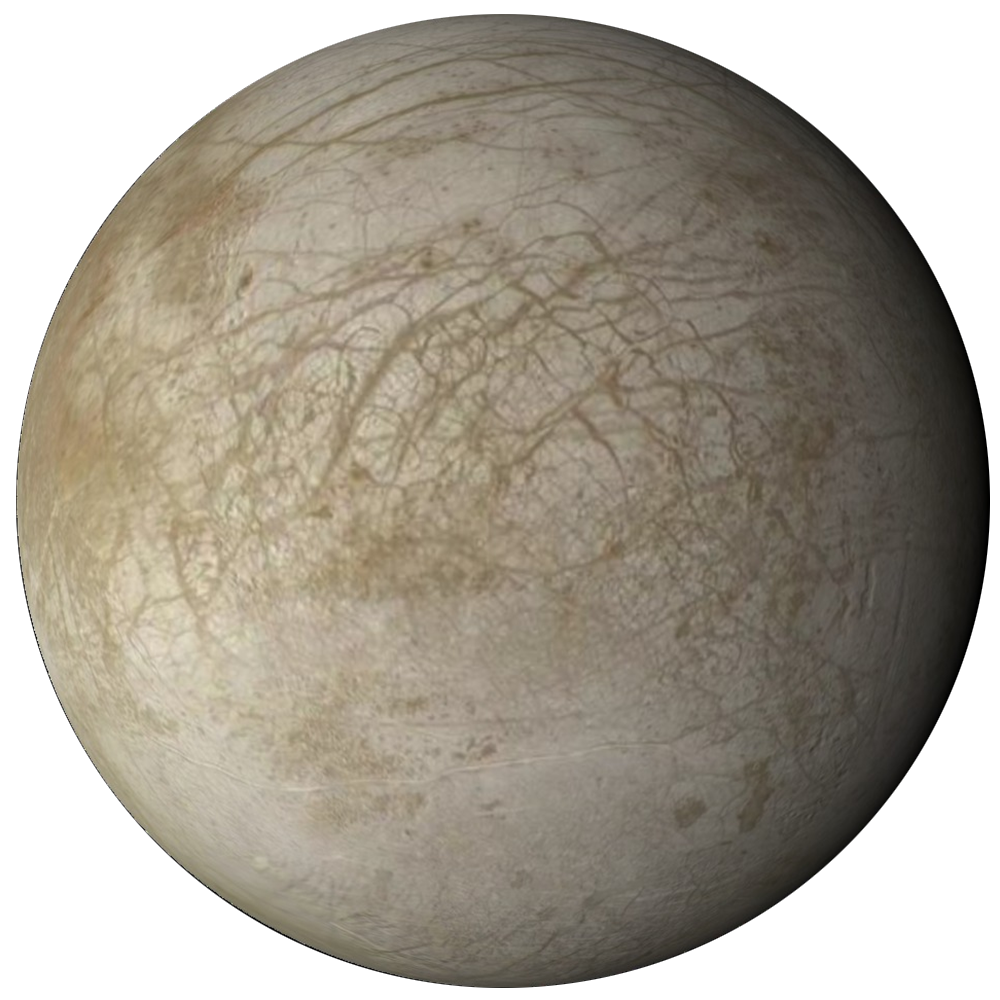
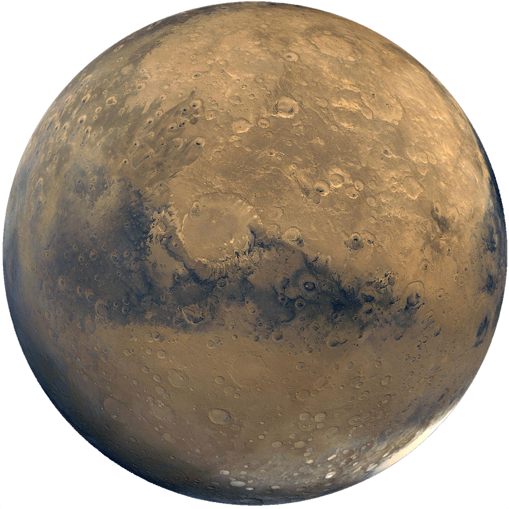

Ignisato Hegemony✖
By 2167, humanity has spread across the Solar System. This expansion was driven by ignisato, an alien species with technology far beyond ours. Following first contact, we were flooded with wondrous technologies while our institutions eroded in an economic upheaval known by the survivors as the Uplift.
Despite advances on many fronts, runaway complexity and ignisato influence leaves many feeling their lives are not their own. Struggling to adjust to their guidance, we race to the stars and strive to understand the world we find ourselves in, including the arcane technologies that make it possible.
Research and Culture✖

Major population centers often see the development of universities and cultural institutions impossible with smaller groups of people. These advanced economies develop into hubs of innovation and entertainment which dominate their region of space.
Humans can live anywhere with more than a tenth of Earth’s gravity and while habitats and spacecraft easily provide quarter-G and more, the comfort of rock under your feet draws people to settle anywhere they can get it naturally. Many people call orbital habitats home, but just as many view them as temporary living arrangements before they retire somewhere solid.
Industry and Production✖

Self-reliance and widespread use of small-scale manufacturing are staples of the offworld economy, but some places develop excess capacity and produce for export. They provide the complicated goods local microfacturing can’t handle and extract resources lacking in other parts of the system.
No matter where you are in the system, you’re not far from a sort of artificial wildlife that builds infrastructure and maintains structures, including almost all spacecraft. Automata come in all shapes and sizes and seem largely oblivious to human presence, despite humans living on and around their hives. Their exotic components make them a target for hunters until human engineers can discover their secrets.
Logistics and Trade✖

The Solar System is an enormous place and moving people and cargo from one end to another requires enormous amounts of energy and coordination. A network of propellant depots and stations on cycling orbits helps ease the passage across the long stretches of void.
Efficient fusion reactors have all but removed the limitations of pre-Uplift spaceflight, enabling brachistochrone trajectories for most destinations. For well-funded endeavors, leading edge hydrogen-burning reactors make any trip trivial to fuel while most make do older aneutronic designs that leave them dependent on helium-3 production facilities.
Exploration and Safety✖

Spaceflight is a dangerous business where any number of hazards can leave a vessel disabled or venting atmosphere or worse. To prevent that, a legion of skywatch telescopes are scattered all across the Solar System to discover and track every piece of debris they can.
This critical service also forms the backbone for the FTL communications network in the system and the vast reams of data generated by so many sky surveys are also used for scientific purposes. Often home to no more than a few hundred residents, telescope outposts are among the most diverse and pioneering settlements in the system, learning the hard lessons space has to teach and thriving all the same.
Research and Conservation✖

One of the more shocking discoveries about ignisato has been their conservation tradition. They are eager stewards of cultural expression and biodiversity, defending and documenting every scrap of it they can find. This can take quite aggressive forms, as the conflict over Mercury showed and the growing struggle for Titan.
For the most part though, the Gendustry Group organizes and conducts surveys of organisms and biospheres in many unexpected locations, their experience giving them a good idea where to start looking. These surveys are given wide berth by development interests, even at the cost of profits in the case of the total settlement prohibition on Enceladus.
Experiments and Oddities✖

While most parts of the Solar System have seen a substantial amount of activity, others have not. Colonies are enormously expensive to establish and without a corporate sponsor, some worlds remain relatively unexplored.
Mars is the exception to this. Despite having little economic usefulness or investor interest from the EDC, it has been a dream of humans for decades to settle the planet. The gravity well makes it attractive for Inner System colonists giving up their careers or retiring, particularly from the Belt. However, without external support, development is extremely slow as the colonists must purchase or produce everything themselves.